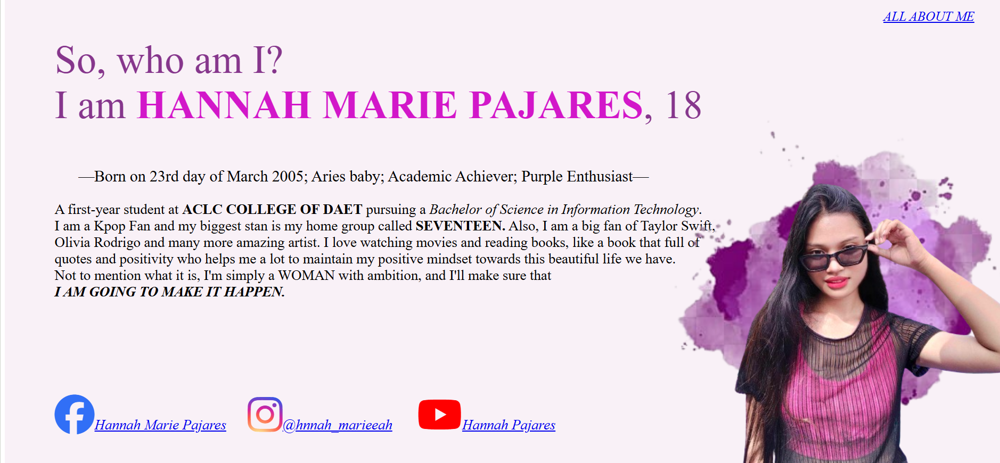
02 / WEB DESIGN
Personal One-Page Website
An early web development project created during my first year, introducing me to website structure and visual design.
BSIT STUDENT · ASPIRING WEB DEVELOPER
I'm an IT student who enjoys exploring new technologies, learning through projects, and turning ideas into something useful.
Exploring technology and creating useful digital experiences, one project at a time.
Let's Talk ↗A LITTLE MORE ABOUT ME
A little story about my journey, the things I love, and the person I'm becoming.
I may seem quiet and reserved at first, but there's a lot more to discover once you get to know me. I'm naturally curious, eager to learn, and someone who hopes to become more independent and explore more of what life has to offer.
My journey in Information Technology started in high school, when I chose Computer Systems Servicing in Grade 9 and ICT in Senior High School. Those experiences eventually led me to pursue a Bachelor of Science in Information Technology. Psychology was also one of my interests, and it remains a field I find fascinating.
ACLC College of Daet
2023 – PresentThriller and psychological films always have my attention.
Finding time to enjoy a good book.
Nothing beats spending quality time with my family.
Always looking forward to new experiences and possibilities.
I'm open to different opportunities where I can continue learning, grow more independently, and discover meaningful work that aligns with my interests and strengths. I may not have everything figured out yet, but I'm excited about the possibilities ahead and the experiences that will help me find my path.
Still figuring things out, and that's part of my journey.WHAT I'VE BEEN LEARNING
Technologies and tools I've explored throughout my journey as an Information Technology student.
Creating and styling web pages.
Practicing server-side programming and application logic.
Learning how applications store and manage information.
Tools that support my coding and development process.
A FEW THINGS I'VE CREATED
A collection of applications, games, and creative work I've developed throughout my learning journey.

An early web development project created during my first year, introducing me to website structure and visual design.
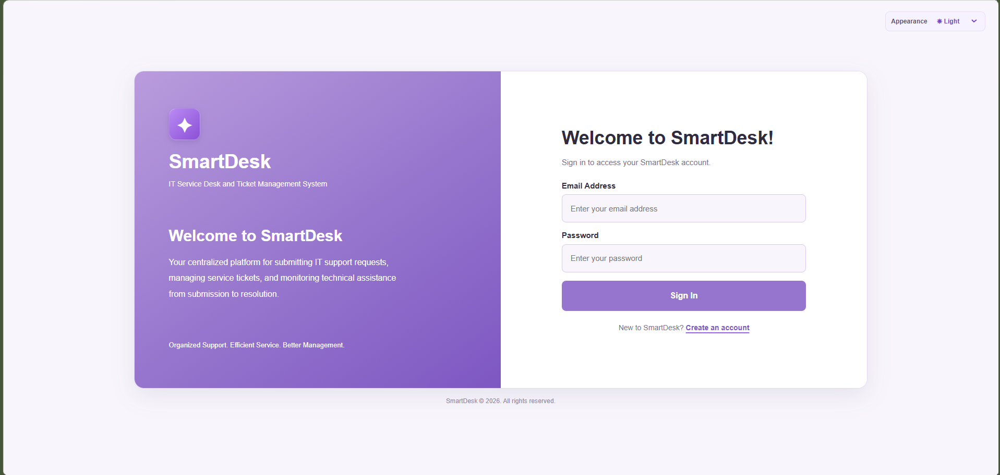
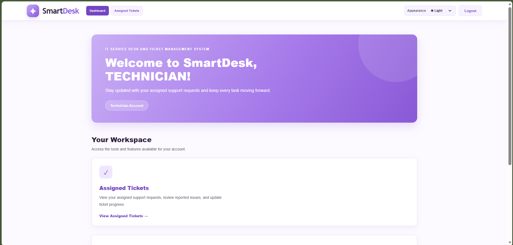
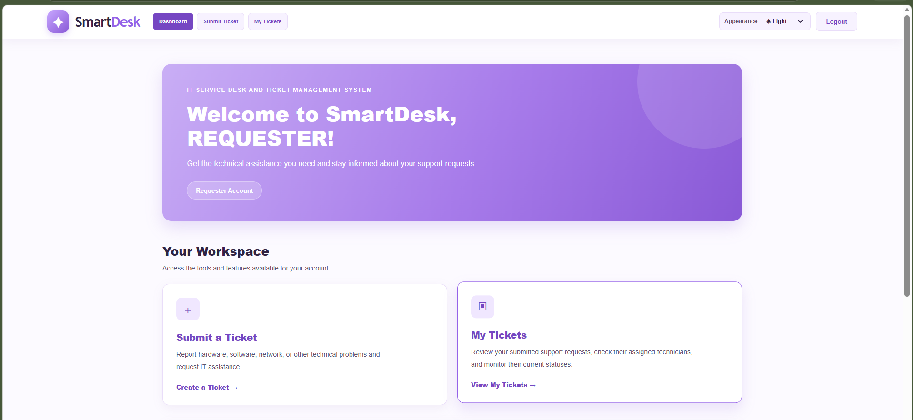
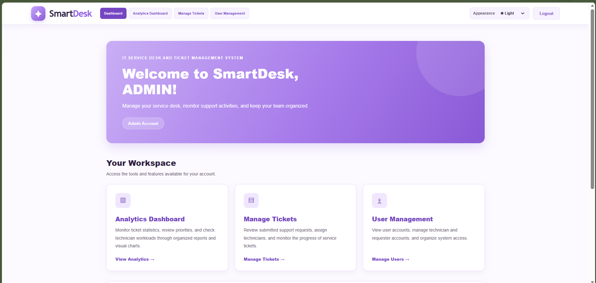
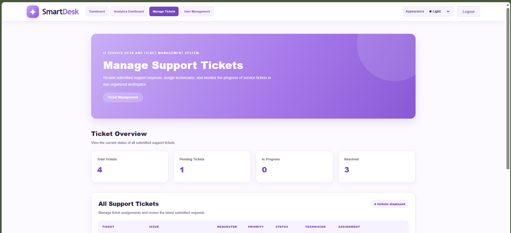
A web-based IT service desk and ticket management system featuring requester, technician, and administrator accounts. It supports ticket submission, assignment, status monitoring, user management, and analytics.
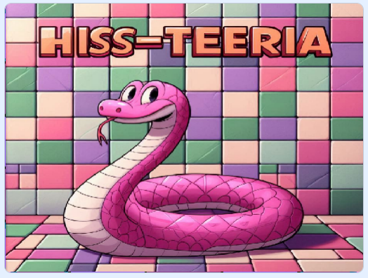
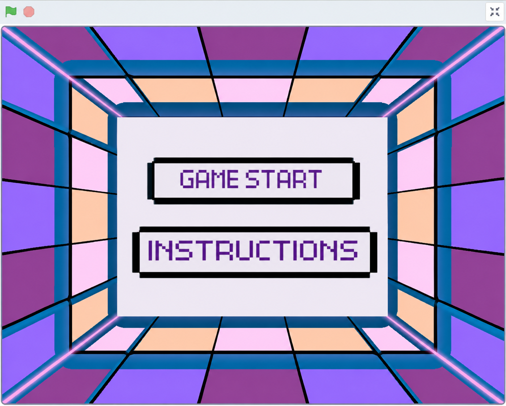
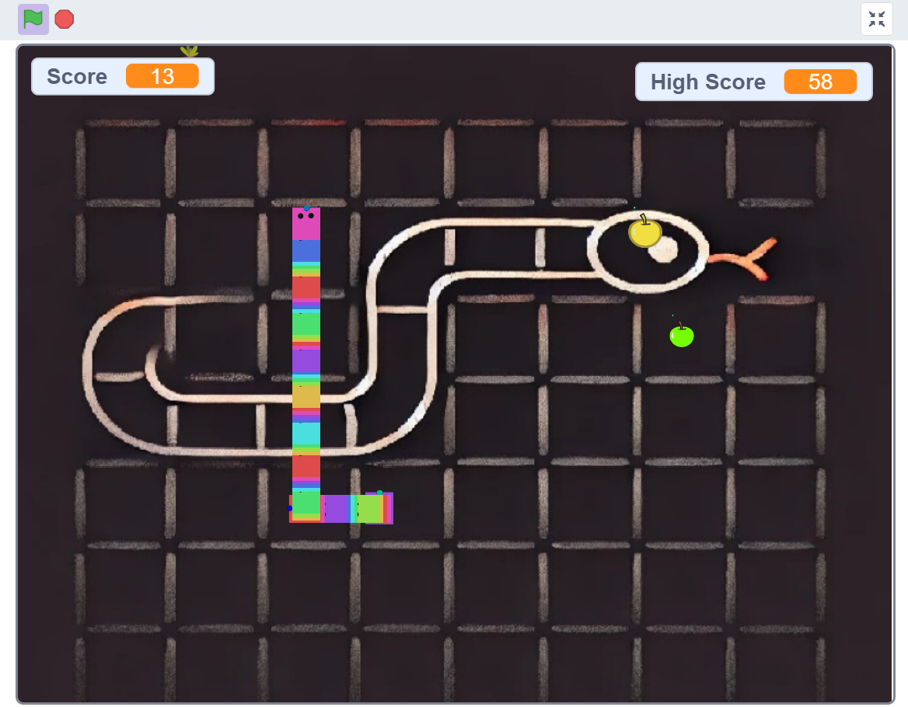
A colorful snake-themed game developed using Scratch, featuring interactive gameplay, a scoring system, and custom-designed visuals.
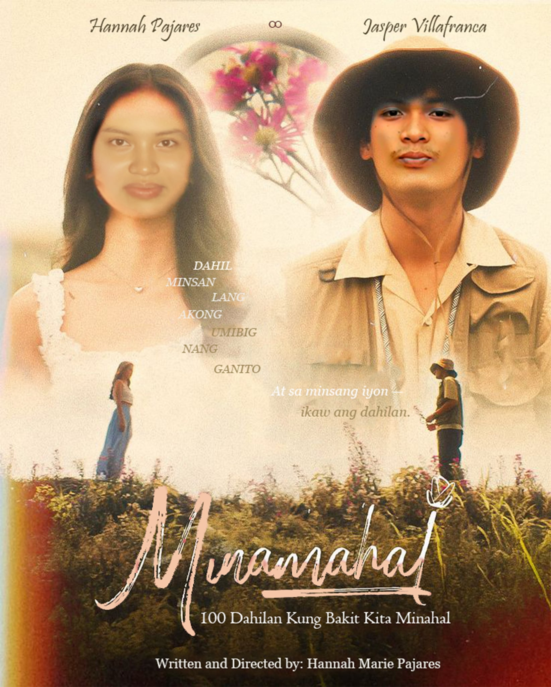
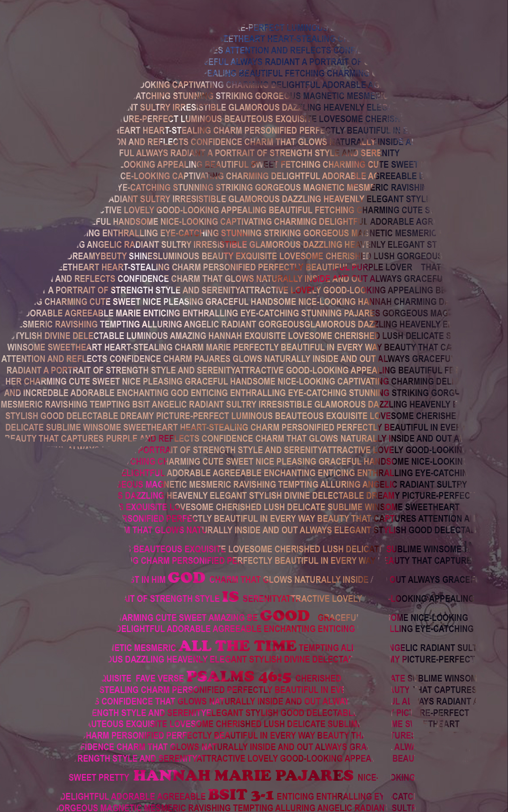
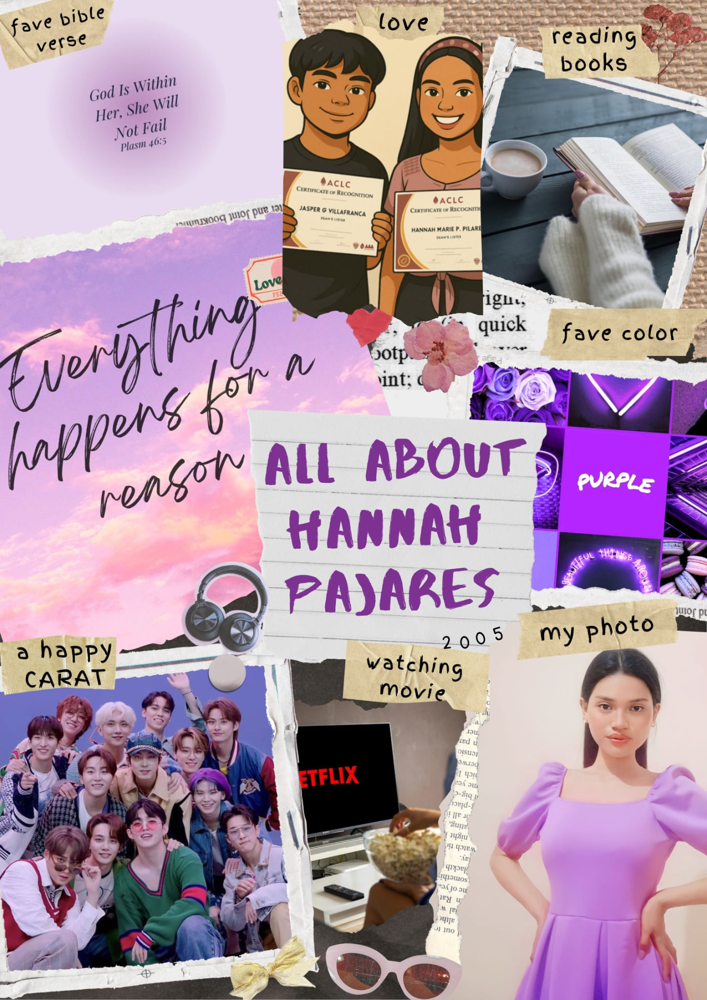
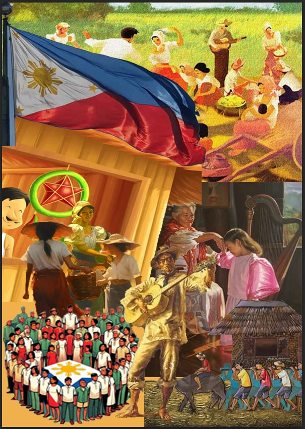
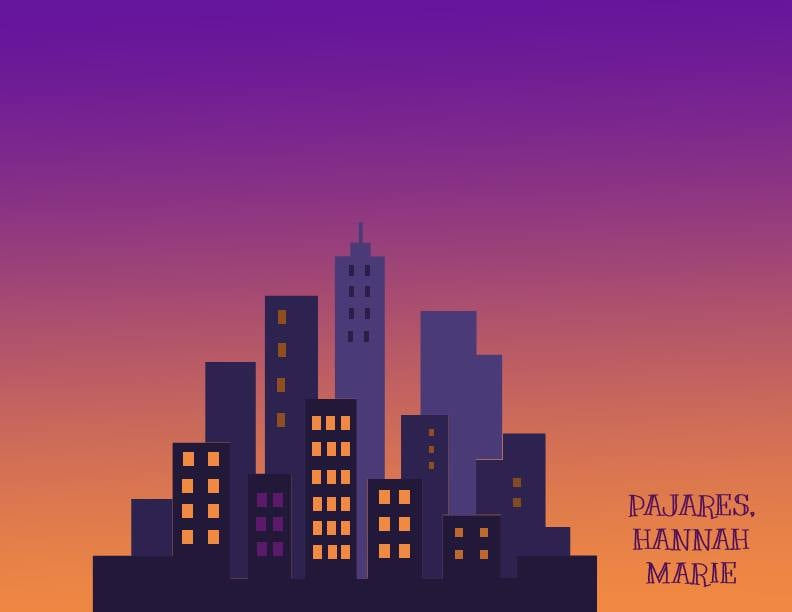
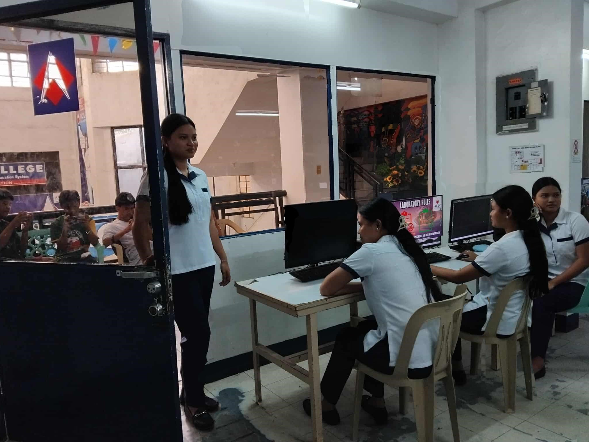
A collection of creative multimedia activities using Adobe Photoshop, showcasing photo manipulation, typography, digital composition, and graphic design.